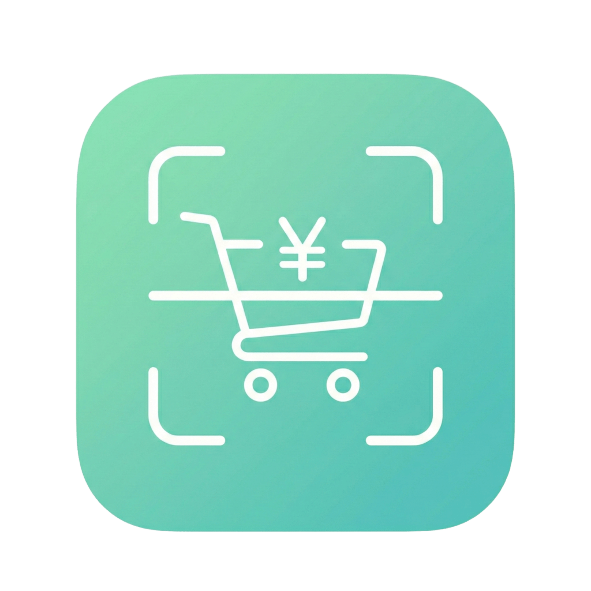

カイログ プライバシーポリシー
CHIANG CHI NAM（以下「運営者」）は、「カイログ」（以下「本サービス」）における
ユーザーの個人情報等の取扱いについて、以下のとおり定めます。
1. 収集する情報
本サービスでは、以下の情報を取得します。
・アカウント情報: メールアドレス、認証ID、ログイン状態、プロフィール情報。
・位置情報: 近隣店舗の候補表示や価格情報の関連付けに利用します。
・ユーザーが入力またはアップロードする情報: 商品名、価格、店舗名、買い物リスト、価格タグ画像等。
・購入情報: サブスクリプションの購入状態、復元状態、管理に必要な識別子。
・広告および端末関連情報: 広告ID、端末情報、広告表示や同意管理に必要な情報。
・利用状況、診断情報: アプリ操作、エラー、クラッシュログ、パフォーマンス情報。
2. 利用目的
取得した情報は、以下の目的で利用します。
・本サービスの提供、運営、改善
・価格情報の解析および表示精度の向上
・アカウント管理、サブスクリプション管理、購入状態の確認
・広告表示、広告頻度の調整、同意管理
・不具合調査、クラッシュ解析、セキュリティ確保
・不正利用の防止、セキュリティ確保
3. 第三者提供・外部サービス
本サービスは、機能提供のために外部サービスを利用する場合があります。
これらのサービスに必要な範囲で情報が送信されることがあります。
・Supabase（認証、データベース、画像保管）
・Google Gemini（画像の文字認識）
・Google Places API（店舗候補の取得）
・RevenueCat（サブスクリプション管理）
・Google Play Billing（Androidでの購入処理）
・Google AdMob / Google User Messaging Platform（広告表示、広告ID、同意管理）
・Sentry（クラッシュログ、診断情報、エラー解析）
外部サービスの取扱いは各社のプライバシーポリシーに従います。
4. 安全管理
本サービスは、通信の暗号化、アクセス制御、認証機能等を用いて情報を保護します。
ただし、インターネット通信や外部サービスを利用する性質上、完全な安全性を保証するものではありません。
5. 保存期間
取得した情報は、本サービス提供に必要な期間保持されます。不要となった場合、または削除依頼が
適切に確認された場合は、法令上必要な保存を除き削除します。
6. 開示・訂正・削除
ユーザーは、自己の情報の開示・訂正・削除を求めることができます。アプリ内のアカウント削除機能、
または以下のページ・連絡先から依頼できます。
データ削除ページ: https://www.kairogu.men/account-deletion.html
7. 変更
本ポリシーは、必要に応じて変更されることがあります。変更後の内容は本サービス内に表示した時点で
効力を生じます。
8. お問い合わせ
本ポリシーに関するお問い合わせは、以下までご連絡ください。
運営者: CHIANG CHI NAM
連絡先: hangyodev@gmail.com
施行日: 2026年1月1日
最終更新日: 2026年4月16日